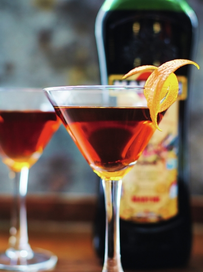

Manhattan
"This is an absolute classic. I make a big batch of this before a party, then pour into chilled martini glasses and garnish as the guests arrive. You don't need to make many though!"

INGREDIENTS:(makes 1)
- - 50 ml rye whiskey
- - 12.5 ml Martini Rosso (red vermouth)
- - 12.5 ml dry vermouth
- - 2 dashes of orange bitters
- - 1 orange
PREPERATION:
Stir the whiskey, vermouths and bitters together over ice, then strain well into a chilled Martini glass. Use a speed-peeler to add a strip of orange peel to garnish.